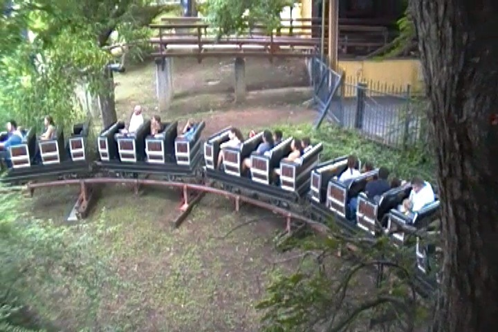

| |
Runaway Mine Train Review

We're here at Six Flags Over Texas. Today's ride we'll be reviewing for you is Runaway Mine Train, Six Flags Over Texas' mine train. And this isn't just the park's mine train. This is yet another historic coaster at the park. For this was the first mine train ever built. This was one of the coasters that led to all the other mine trains being built. So yeah. This is certainly a famous coaster. It may be meh, but it's a historic meh coaster. We pull down the lap bars and away we go. We head down a small little hill and head around a small turn and into some straight track. And hey, we then get to "TAKE THE SHED!!!" only to go out and down another small dip, head around a turn, and climb a small lifthill. Hey, at least we're heading uphill now. And hey, at the top, we get to "TAKE ANOTHER SHED!!!". We head around a turn, only to head around another turnaround. And I think it's all at a slight downhill angle, cause we're picking up some speed here. We're not going fast. But at least we're moving. We then head down a sort of helix drop, and we're now moving. It feels like a roller coaster at this point. And hey, we now have a great view of Mr. Freeze Reverse Blast. We head around a banked turn, only to dip down to the ground and go around another banked turn. Hey, we've got some cool laterals now. Wee!!! =) We head around this banked turn, losing some speed only to be slow again as we head up a small hill. Though we get some of that speed back as we fall down another small little bump. We head around another turnaround as we now get to "TAKE THE TUNNEL!!!". We head around another turnaround in the dark, popping out into daylight and heading up another tiny little hill. We head around a turn and into a teeny tiny little lifthill, which is also BTW inside a shed. YAY!!! I honestly don't think this was originally going to be a lifthill. I think this was going to just be another hill, only there wasn't enough speed to make it up, so they just added a lifthill like in RCT and just declared "Problem solved!". We then head around a couple of turns, through some straight track, around another turn, and into more straight track. But at least it's slightly downhill, so we're gaining a little speed. We go around another turn as we "TAKE YET ANOTHER SHED!!!" and head straight into more straight track. We head around a slight downward helix, leading us into yet another lifthill. Yeah. I totally buy the 2nd lifthill accident theory. Yeah. This lifthill is tiny too, but whatever. And at the top, we just head into a house. We see a couple of mannequins sitting down, just sitting at a table, having some beers and playing cards while the bartender makes sure that none of them vomit on the table in a drunken haze. Hey Barkeeper!! Hand me a beer. The operations at this park are depressing me. But then we drop out of the house and "TAKE ANOTHER TUNNEL!!!". YAY!!! WEE!!! =) We head around another turn in the dark, head up a small hill, and glide into the brake run. Now I know mine trains are usually lame rides to begin with, but Runaway Mine Train is lamer than most as there isn't even a fake helix of death at the end. The ride is mainly just straight track. But it definetly is a quirky little ride. I mean, it's got a 5 second dark ride section in the middle of the ride. And it was the first mine train ever built. So I can forgive the fact that there's pretty much no drops at all on this ride. I wouldn't really recommend it. It's mainly for the purpose of credit whoring, and if you care about riding historical roller coasters, well this is certainly one.
5/10
Location: Six Flags Over Texas
Opened: 1966
Built by: Arrow
Last Ridden: July 18, 2013
Runaway Mine Train Photos
Home
|